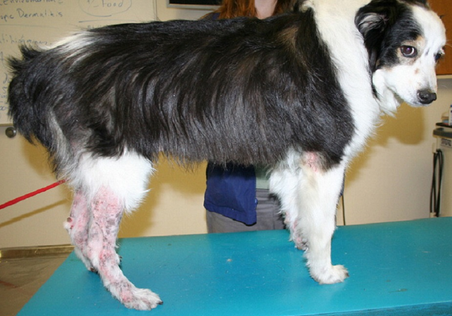
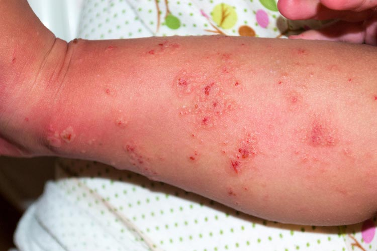

Zoonotic illnesses are diseases humans can get from animals. Many infectious diseases can spread from animals to people, and some of these can come from your pet. But before you become too alarmed, know that getting diseases from a pet is pretty uncommon, and that you can prevent most of them with some very simple steps.
Pill Identifier
Drugs Interaction Checker
Find Vitamins
Find a Doctor
Pet-Related Infections
The most popular pets are dogs and cats, but rabbits and backyard poultry are increasingly common in domestic settings, and a wide range of reptiles and other “exotic” species are entering our homes. Pets bring enormous social and health-related benefits to people,1 but they can also transmit disease. Physicians and veterinarians have the opportunity to collaborate in their interactions with patients and pets to optimize health for all.
DERMATOPHYTOSIS
Dermatophytosis (ringworm) is caused by a number of skin fungi and can infect both humans and animals14. Sources of infection include humans, domestic animals, wildlife (primarily rabbits and rodents), and soil.
see more


SCABIES
There is often anguish and some degree of disgust associated with having a dog that has received a scabies diagnosis. The scabies mite is highly communicable among dogs and may infest humans, but cats are relatively resistant.
see more
DERMATOPHYTOSIS
Dermatophytosis (ringworm) is caused by a number of skin fungi and can infect both humans and animals14. Sources of infection include humans, domestic animals, wildlife (primarily rabbits and rodents), and soil.
see more